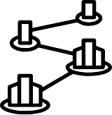

designed to promote the
creation and discovery of
sanitation innovation

Piloting/ Scaling up
Enabling sanitation businesses with a proven business model to
rapidly expand their services to additional markets